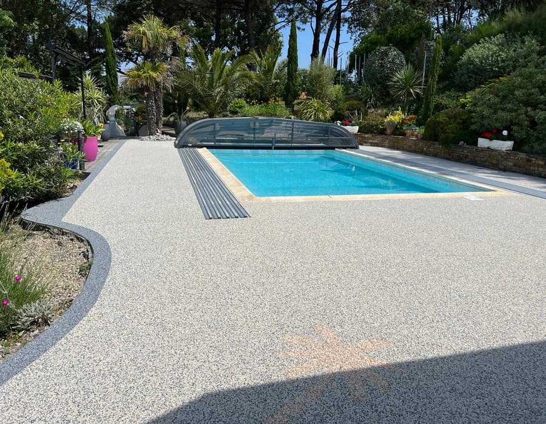
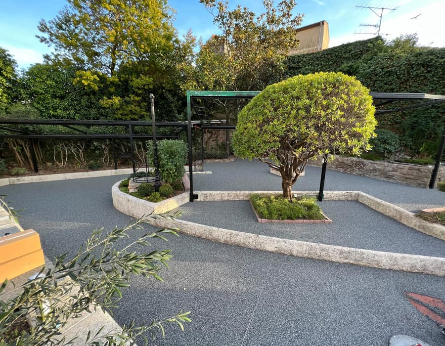
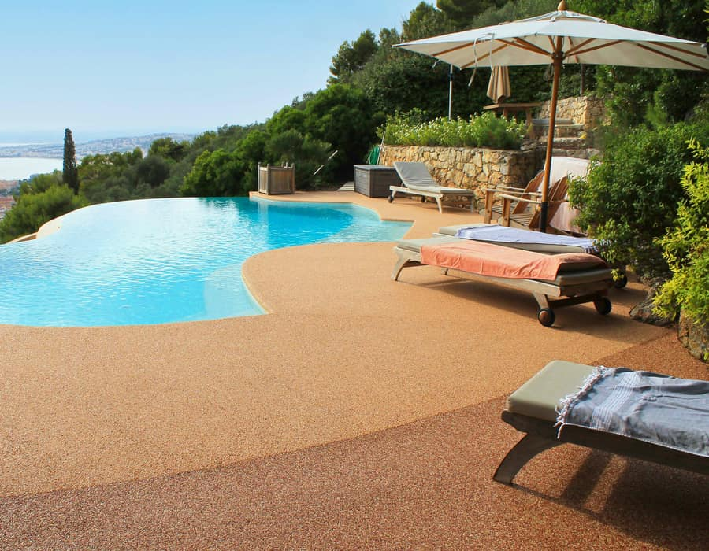
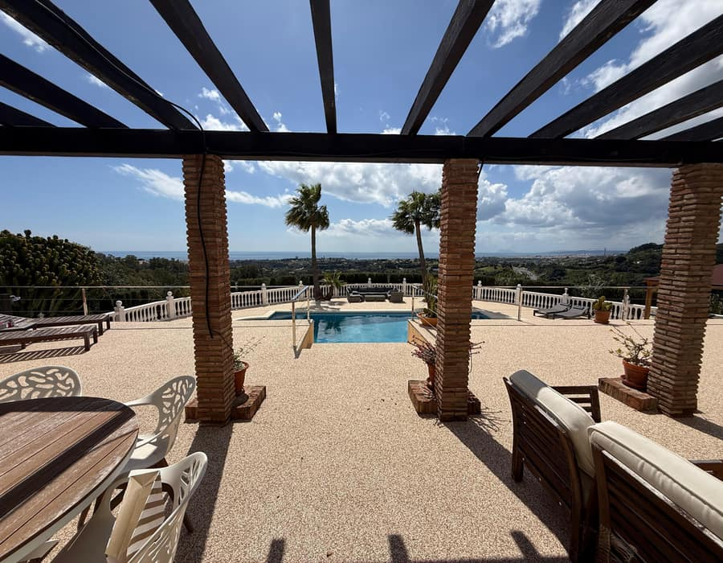
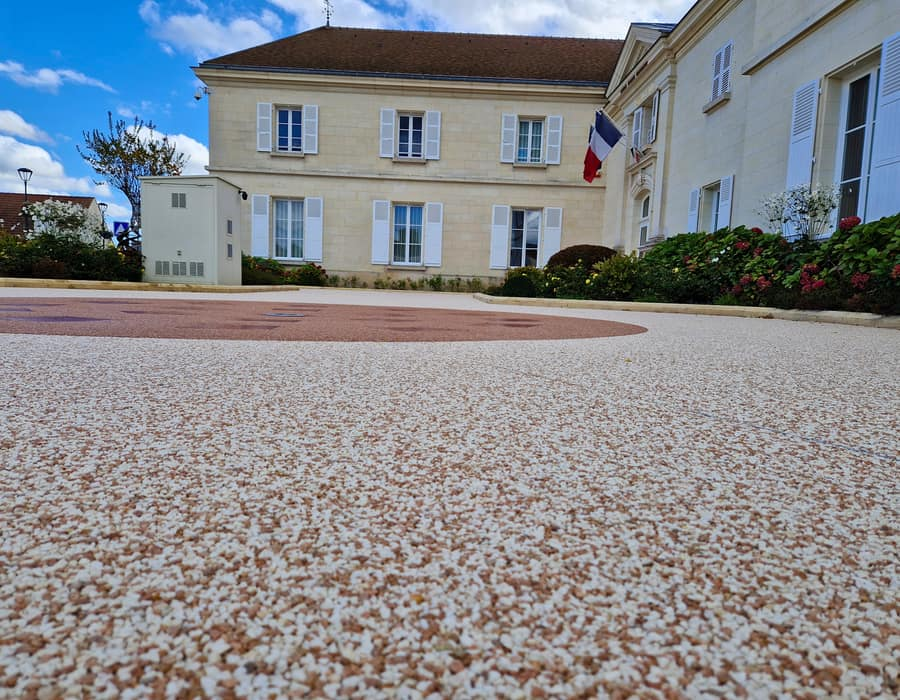
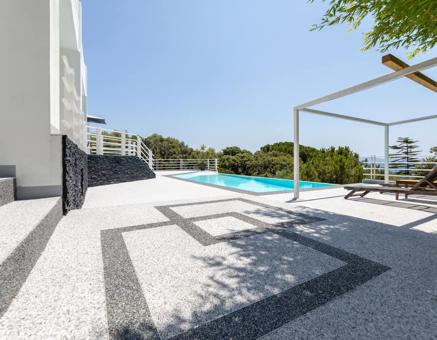

Resina de poliuretano transparente, resistente al calor, al hielo, a los rayos UV y al agua, combinada con grava de mármol o cuarzo. El resultado es un pavimento drenante y certificado por organismos independientes, mucho más antideslizante que el gres, la madera o el hormigón.
Grava de mármol natural aglomerada con resina de poliuretano transparente.
Cada acabado combina una grava natural distinta con la resina de poliuretano transparente, por lo que el color y el veteado son siempre reales y no se decoloran con el sol. Estos son algunos ejemplos de nuestro catálogo de referencias Résineo.






¿Buscas un tono concreto? Podemos combinar colores y crear cenefas o mosaicos a medida — pide muestras sin compromiso.
| Composición | Entre un 95 y un 97 % de granulado mineral natural aglomerado con ligante de poliuretano transparente |
|---|---|
| Granulados | Mármol o cuarzo, en unos treinta colores y sus combinaciones |
| Capacidad drenante | De 30 a 50 L/s/m², según el espesor y la granulometría |
| Antideslizamiento | Clasificación PN18 (zonas de pies descalzos) para Résineo Drain |
| Espesor habitual | Unos 10 mm sobre hormigón o baldosa (uso peatonal); unos 30 mm sobre grava compactada |
| Resistencia | Rayos UV, calor, ciclos de hielo-deshielo y agua |
| Certificación | Résineo Drain cuenta con evaluación técnica del CSTB (Centre Scientifique et Technique du Bâtiment, Francia) |
| Fabricante | LRVision, Toulouse (Francia), desde 2004 |
| Vida útil | Al menos 10-15 años con mantenimiento regular (dato del fabricante) |
Datos facilitados por el fabricante para la gama Résineo Drain. Los valores exactos dependen del producto, del soporte y de la puesta en obra. Te entregamos la ficha técnica concreta con el presupuesto.
La clave está en la proporción. Hay tan poca resina en relación con la piedra que la resina solo recubre y une los granos por sus puntos de contacto. Los huecos que quedan entre ellos forman una red de poros conectados por donde circulan el agua y el aire. Por eso la superficie no se encharca y se seca rápido después de un baño o de la lluvia.
La puesta en obra es artesanal: la resina y la piedra se mezclan en obra con una mezcladora de eje vertical y se extienden y alisan a mano, con llana. No hay piezas ni cortes, así que se adapta a curvas, escalones, alcorques y bordes de piscina.
Es el nombre con el que se conoce popularmente a los pavimentos de piedra natural aglomerada con resina, como Résineo: una capa continua de granos de mármol o cuarzo unidos por un ligante transparente, porosa y drenante.
Los dos son piedras naturales. El mármol ofrece tonos suaves y naturales y el cuarzo, colores más intensos y uniformes. Te llevamos muestras reales de ambos para que elijas con la luz de tu propio espacio.
El color es el de la propia piedra, no una pintura, y la resina de poliuretano está formulada para resistir los rayos UV. Para conservar el aspecto basta con la limpieza anual recomendada.
Con un mantenimiento regular, la longevidad media observada por el fabricante es de al menos 10 a 15 años, según el uso y la exposición.
Te llevamos muestras reales de los colores y granulados para que elijas con la luz de tu espacio.
Pedir presupuesto